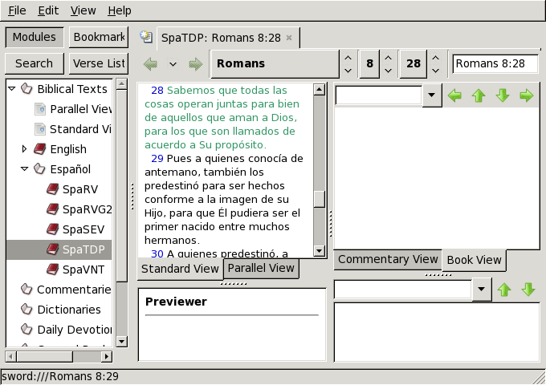

Como se describe en xiphosmanual, es una herramienta gráfica de estudio e investigación bíblica que se basa en las librerías del proyecto Sword.

Puede iniciarla desde el menu de fluxbox Espiritualidad->Xiphos
o desde una terminal con xiphos. Deben
instalarse módulos primero. Cada módulo puede ser una traducción,
comentario, diccionario. Hay traducciones a muchos idiomas
(incluyendo manuscritos griegos y hebreo). En español entre otras
se encuentra parte de la traducción de dominio público de los
evangelios que típicamente se ha incluido con adJ.
Una vez instale los módulos que desea usar, es posible ver varias traducciones en paralelo. Cada traducción puede contar con opciones como: Palabras de Cristo en Rojo, Números Strong, Etiquetas morfológicas, Notas al pie, encabezados.